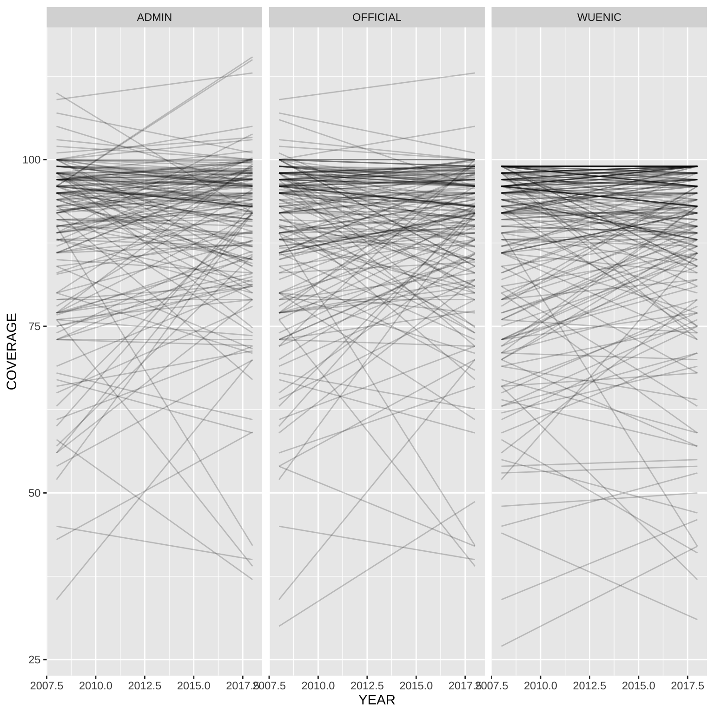
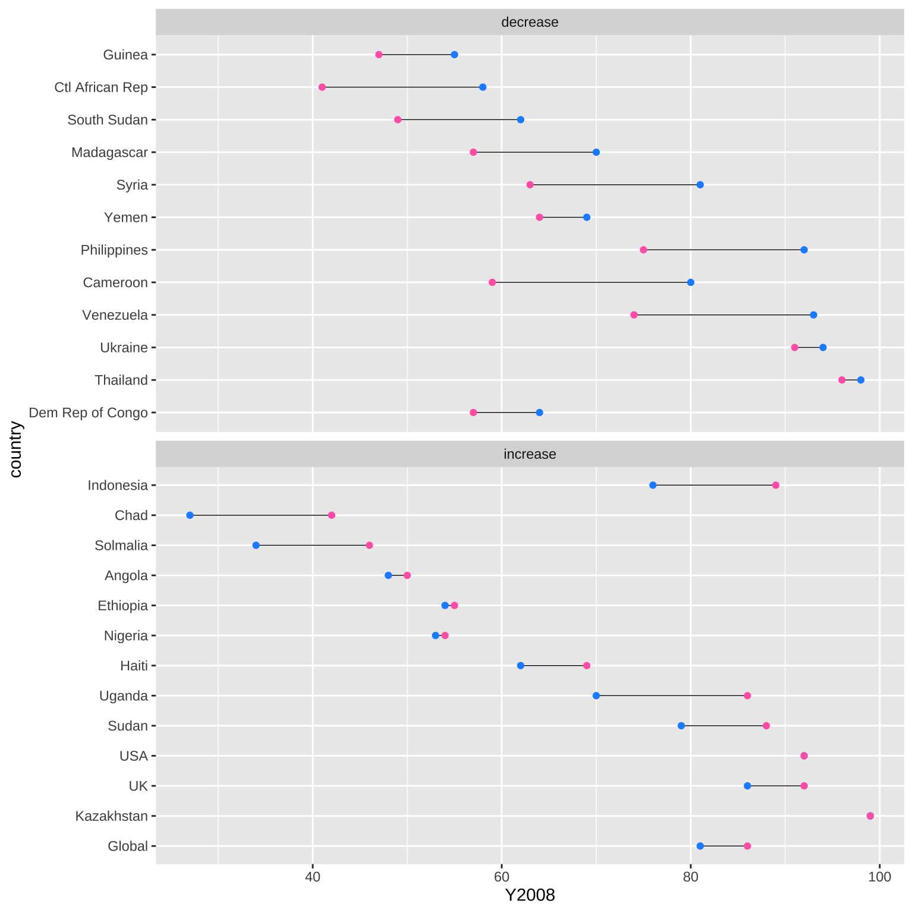
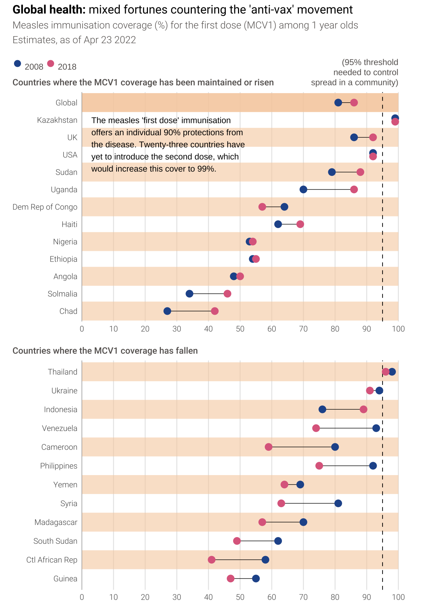

24 Financial Times
24.1 Examples
I browsed the Financial Times Data Visualisation webpage to find a plot I want to re-create. I don’t have a subscription, so I could only see the thumbnails, but it looks like this is a section for snarky commentary on plots.
I did find that you can hack the image URLs to increase the width and see bigger versions.
Code
The Visual and data journalism section looks more fruitful, if I had a subscription. Then I searched twitter (congrats on getting a 2-letter handle, @FT!) and found a link to an article on Ten charts that tell the story of 2019 that I could access. It’s interesting to read some pre-pandemic news; the first two charts are on Brexit and anti-vax movements.
I always like these lollipop charts and haven’t had much practice making them, so I’m going to recreate this plot.
24.2 Data
Code
| CODE | NAME | YEAR | COVERAGE_CATEGORY | COVERAGE |
|---|---|---|---|---|
| AFG | Afghanistan | 2018 | ADMIN | 82.45 |
| AFG | Afghanistan | 2008 | ADMIN | 75.00 |
| AFG | Afghanistan | 2018 | OFFICIAL | 82.00 |
| AFG | Afghanistan | 2008 | OFFICIAL | 59.00 |
| AFG | Afghanistan | 2018 | WUENIC | 71.00 |
| AFG | Afghanistan | 2008 | WUENIC | 59.00 |
I’m not sure what the different coverage categories are, but a quick plot shows that the WUENIC values are at least all under 100%.
Code

I need to use the 2011 value for South Sudan instead of 2008, since South Sudan didn’t exist until 2011.
Code
| NAME | CODE |
|---|---|
| Equatorial Guinea | GNQ |
| Guinea | GIN |
| Guinea-Bissau | GNB |
| Papua New Guinea | PNG |
Code
countries <- c("Global", "KAZ", "GBR", "USA", "SDN", "UGA", "COD", "HTI", "NGA", "ETH", "AGO", "SOM", "TCD", "THA", "UKR", "IDN", "VEN", "CMR", "PHL", "YEM", "SYR", "MDG", "SSD", "CAF", "GIN")
mcv1_status <- mcv1 %>%
filter(COVERAGE_CATEGORY == "WUENIC") %>%
select(-COVERAGE_CATEGORY) %>%
pivot_wider(names_from = YEAR,
names_prefix = "Y",
values_from = COVERAGE) %>%
drop_na() %>%
mutate(change = ifelse((Y2018 - Y2008) < 0, "2fallen", "1risen")) %>%
filter(CODE %in% countries) %>%
mutate(CODE = factor(CODE, rev(countries))) %>%
arrange(CODE) %>%
mutate(country = case_when(
CODE == "GBR" ~ "UK",
CODE == "USA" ~ "USA",
CODE == "COD" ~ "Dem Rep Congo",
CODE == "VEN" ~ "Venezuela",
CODE == "SYR" ~ "Syria",
CODE == "CAF" ~ "Ctl African Rep",
TRUE ~ NAME
))Code

Code
country_names <- select(mcv1_status, CODE, country)
dot_08 <- "#24559A"
dot_18 <- "#DD6A8D"
bg_light <- "#FFFFFF" # "#FFF1E5"
bg_tan <- "#F6D0AE"
text_color <- "#65615E"
figdat <- mcv1_status %>%
mutate(
icode = as.numeric(CODE),
icode08 = icode + ifelse(CODE == "KAZ", .1, 0),
icode18 = icode - ifelse(CODE == "KAZ", .1, 0),
stripe = c(0.9,
rep(c(0, 0.3), length.out = 12),
rep(c(0.3, 0), length.out = 12)
) %>% rev()
)Code
risen <- figdat %>%
slice(13:25) %>%
ggplot(aes(y = icode)) +
geom_hline(aes(yintercept = icode,
alpha = I(stripe)),
color = bg_tan,
size = 9) +
geom_vline(xintercept = 95, linetype = 2, size = 0.35) +
geom_segment(aes(x = Y2008, xend = Y2018, yend = icode),
color = "black", size = 0.25) +
geom_point(aes(x = Y2008, y = icode08),
color = dot_08, size = 3) +
geom_point(aes(x = Y2018, y = icode18),
color = dot_18, size = 3) +
annotate("text", size = 3,
label = "The measles 'first dose' immunisation\noffers an individual 90% protections from\nthe disease. Twenty-three countries have\nyet to introduce the second dose, which\nwould increase this cover to 99%.",
x = 3, y = 24, hjust = 0, vjust = 1) +
scale_x_continuous(breaks = (0:10)*10,
limits = c(0, 100),
expand = expansion(0)) +
scale_y_continuous(breaks = 1:25,
labels = mcv1_status$country,
expand = expansion(add = .6)) +
scale_color_manual(values = c("dodgerblue3", "hotpink")) +
coord_cartesian(clip = "off") +
labs(x = NULL, y = NULL,
title="Countries where the MCV1 coverage has been maintained or risen") +
theme_minimal(base_family = "Helvetica Neue") +
theme(
text = element_text(color = text_color),
plot.background = element_rect(fill = bg_light, color = "transparent"),
axis.line.y.left = element_line(color = "grey60",
size = 0.2),
axis.line.y.right = element_line(color = "grey60",
size = 0.2),
panel.grid.major.y = element_blank(),
panel.grid.minor.x = element_blank(),
panel.grid.minor.y = element_blank(),
panel.grid.major.x = element_line(size = 0.4,
color = "grey90"),
plot.title.position = "plot",
plot.title = element_text(size = 10, face = "bold"),
plot.margin = unit(c(.1, .3, .1, .1), "inches")
)Code
fallen <- figdat %>%
slice(1:12) %>%
ggplot(aes(y = icode)) +
geom_hline(aes(yintercept = icode,
alpha = I(stripe)),
color = bg_tan,
size = 9) +
geom_vline(xintercept = 95, linetype = 2, size = 0.35) +
geom_segment(aes(x = Y2008, xend = Y2018, yend = icode),
color = "black", size = 0.25) +
geom_point(aes(x = Y2008, y = icode08),
color = dot_08, size = 3) +
geom_point(aes(x = Y2018, y = icode18),
color = dot_18, size = 3) +
scale_x_continuous(breaks = (0:10)*10,
limits = c(0, 100),
expand = expansion(0)) +
scale_y_continuous(breaks = 1:25,
labels = mcv1_status$country,
expand = expansion(add = .6)) +
scale_color_manual(values = c("dodgerblue3", "hotpink")) +
coord_cartesian(clip = "off") +
labs(x = NULL, y = NULL,
title="Countries where the MCV1 coverage has fallen") +
theme_minimal(base_family = "Helvetica Neue") +
theme(
text = element_text(color = text_color),
plot.background = element_rect(fill = bg_light, color = "transparent"),
axis.line.y.left = element_line(color = "grey60",
size = 0.2),
axis.line.y.right = element_line(color = "grey60",
size = 0.2),
panel.grid.major.y = element_blank(),
panel.grid.minor.x = element_blank(),
panel.grid.minor.y = element_blank(),
panel.grid.major.x = element_line(size = 0.4,
color = "grey90"),
plot.title.position = "plot",
plot.title = element_text(size = 10, face = "bold"),
plot.margin = unit(c(.1, .3, .1, .1), "inches")
)Code
risen + fallen +
plot_annotation(title = "**Global health:** mixed fortunes countering the 'anti-vax' movement",
subtitle = "Measles immunisation coverage (%) for the first dose (MCV1) among 1 year olds \nEstimates, as of Apr 23 2022\n\n<span style='color: #24559A; font-size: 22px;'>●</span> 2008 <span style='color: #DD6A8D; font-size: 22px;'>●</span> 2018",
theme = theme(plot.background = element_rect(fill = bg_light, color = "transparent"),
plot.title = element_markdown(size = 12, face = "plain"),
plot.subtitle = element_markdown(size = 10, face = "plain")
)) +
plot_layout(nrow = 2) 
24.3 Theme
I downloaded the ftplottools package from Financial Times. There isn’t much documentation beside the man pages, so let’s play with it.